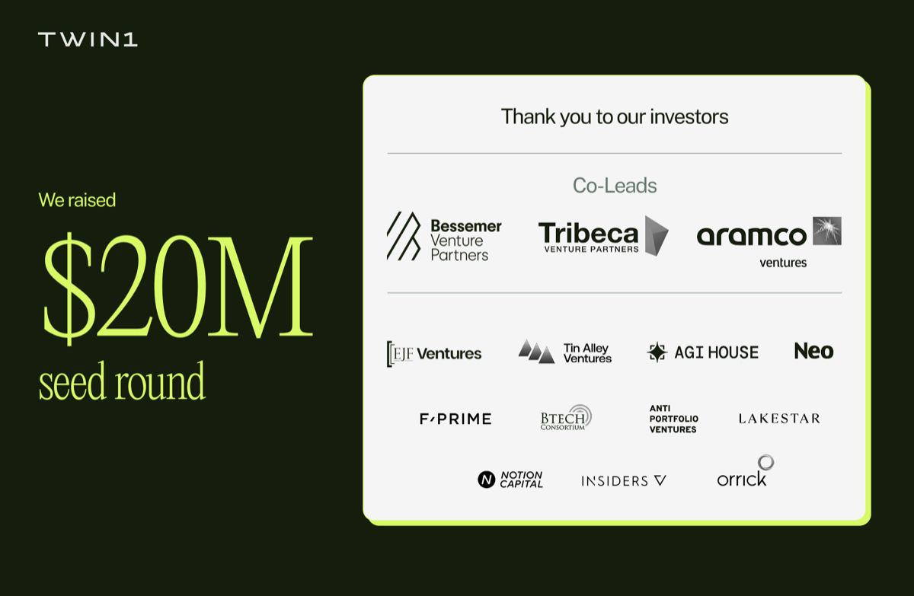

Executive Summary
On August 20 a company called Twin1 AI came out of stealth. Its product gives every knowledge worker an AI digital twin of their own, and on the same day it announced a $20 million seed round. The round is one day's news. What the twin feeds on, and where that ends up, stays with the organizations that adopt it.
The number that stands out among the figures the company disclosed is that law firm and bank customers have already handed 30 to 50 percent of their communications work to a twin. Handing over that much means a person's judgment, relationships and way of speaking are inside the system. Which is why the differentiator the company leads with is not model performance but permission design, the rules that decide who may see how much of that context.
Open that permission design up and the unit of control becomes visible. What a twin knows inherits the access rights the employer issued, and the moment when all the data is erased is written as the end of the contract between the customer and Twin1. What an individual can claim about that context after leaving the company is not defined anywhere in the published documents.
Key Figures
Sources: Twin1 AI launch release (2026-08-20) and the governance page (checked 2026-08-23)
All four figures below come from the company itself. The automation share is a number customers reported to the vendor, and the deletion trigger is a promise the company wrote on its own website. Read them as disclosed figures rather than externally verified ones.
$20 million
Size of the seed round
Co-led by Bessemer, Tribeca and Aramco Ventures, and disclosed alongside the launch from stealth a year after founding
30-50%
Communications work handed to twins
An automation share reported by customers running the platform for more than a year, limited to communications work rather than all work
5 firms
Named customers
Three law firms, one bank and one energy company. Orrick is both a customer and a strategic investor in this round
Contract end
Trigger for deleting all data
Termination or expiry of the contract between the customer and Twin1. No clause in the published documents covers an individual's departure
Stealth Hid the Name, Not a Year of Deployments
Twin1 AI was founded in 2025 and has teams in San Mateo and London. In its August 20 announcement the company disclosed its launch from stealth and a $20 million seed at once. Bessemer Venture Partners, Tribeca Venture Partners and Aramco Ventures co-led the round, with participation from EJF Ventures, Lakestar, Notion Capital and others. Among the four co-founders, CEO Lewis Liu built and sold Eigen Technologies, an AI company that worked on financial and legal documents, and several investors who backed Eigen came back into this round.

The more important part of the announcement is not the amount but the deployment history. The company says it has been deployed with partners across legal, financial services and energy for over a year. The customers named are the law firms Linklaters, Orrick and Dechert, plus Customers Bank and the energy company Aegis Energy. Stealth here did not mean there was no product. It meant the name was not out yet.
That is where the 30 to 50 percent figure comes from. The release attributes it to customers rather than to the company's own measurement: customers report that the platform automates 30-50% of the communications work done by knowledge workers. Two qualifiers travel with it. The scope is communications work rather than office work in general, and the method behind the percentage has not been published.
The release also carries a customer quote. Wendy Butler Curtis, Chief Innovation Officer at Orrick, Herrington & Sutcliffe, said that "Twin1 provides the opportunity to mine our collective data, and it is one of the most exciting developments in the practice today." The verb an innovation officer at a law firm reached for was mine, which says something about what the product is. Orrick also appears in the same release as a strategic investor in the round. The customer is also an investor.
An interview Liu gave the same day to the legal technology outlet Artificial Lawyer adds one number that is not in the release. The company has "a pipeline across more than 400 prospects, including major law firms, banks and other regulated institutions." Three of the four co-founders came from Eigen, and Eigen was sold to Sirion in 2024.
Twins Learn From People, Then Pool Into an Org-Wide Layer
The material a twin learns from is email, meetings, documents and the workplace systems a company runs on. The place it operates is not a separate app either, but the tools where people already work. Slack, Microsoft Teams, Outlook, Gmail, Google Drive and SharePoint are listed as connections.
The company FAQ is more direct about what the twin learns. It says a twin "learns the language, tone and communication patterns in my own private knowledge base and uses that context to draft responses in my style, including adapting how I communicate with different people." The learning target does not stop at work product. It reaches the way a person works.
Liu has explained why the product aims at people rather than documents. At Eigen he was hired by a top 10 global law firm to turn the stock purchase agreements its M&A lawyers had negotiated into a structured database. It worked, and an associate could then see how often a buyer conceded a particular term. But what the firm really wanted to know was why the buyer conceded, under what circumstances and what negotiation path produced that outcome, and that knowledge was scattered across partners' and associates' emails, calls, notes and memories. What Liu drew from that job was the conclusion that "in a professional organization, the atomic unit of knowledge isn't a document, it's a person." That is why the twin feeds on email and meetings. The reasoning behind a judgment lives there, in the parts that never made it into a document.
Individual twins do not sit alone. The company binds them into a layer it calls the Twin Network, which locates the person in the organization who knows the answer to a question, gathers permission-aware context and coordinates work across teams. On top of that sits an enterprise MCP server, an interface that lets outside AI agents and internal tools reach the context held by an individual twin or the wider network and take action from that context.
Put together, one person's work context starts as a personal assistant and becomes an interface the organization can query. The sentence that states this direction most precisely came from Brian Hirsch, co-founder at Tribeca Venture Partners, in the launch release: the platform "transforms fragmented human knowledge into trusted organizational intelligence." As an explanation of what the product makes, an investor's line is more candid than anything in the company's own copy.
Liu's phrasing has a different grain. He said that "in every knowledge organization, the human is the atomic unit of knowledge. The opportunity with AI is not to flatten people's expertise into generic output, but to connect and amplify their unique knowledge, judgment and context." The release carries another line of his alongside it: "our belief is that AI should work for people, not be done to them." Set the two quotes side by side and you can see the same product rendered once in the language of the person and once in the language of the organization.
The Second Permission Layer Hands the Boundary to the Employer
The second key capability in the company's release is privacy and governance controls. It describes six interlocking layers of rules-based and AI-based controls. The governance page on the website numbers five of them: pre-ingestion filters, inherited permissions, contextual privacy, client exclusion and human-in-the-loop.
It is easy to skim past as marketing copy, but reading line by line what each layer blocks shows how far the control actually reaches. Pre-ingestion filters exclude client codes, keywords or entire folders before any data enters the pipeline, and client exclusion applies hard compliance filters based on personal information and ethical walls. For sensitive queries, drafts are forwarded to a person for review, edit or rejection. These are the items a product sold into regulated industries has to cover, and they are covered in earnest.
The layer that raises the question is the second one. Inherited permissions reads: "Your Twin's knowledge is bounded by your access rights. No privilege escalation through the AI layer." As a security principle that is exactly right. Those access rights, though, are a value the employer issues and the employer revokes. The claim that the individual is in control and the fact that the company draws the boundary sit inside a single sentence.
The same page carries other sentences too. The document opens by declaring "your data is yours. Full stop." Scroll down and it explains that "your firm's data remains strictly private and unique to your deployment." The you in the first sentence is a person. The subject of the second is a firm. The two are not contradictory. But the fact that this product counts the owner of data sometimes by individual and sometimes by legal entity is visible on a single page.
The same shift runs through the release. The first item in the list of key capabilities is an individual digital twin for every human; the last is Sovereign AI, described as giving enterprises control over their AI destiny by keeping their data, proprietary knowledge and governance policies under their control. The subject of the first item is a person and the subject of the last is an enterprise, and both sit in the same list. Elliott Robinson, partner at Bessemer Venture Partners, said the platform "represents an important shift in how AI can be applied to knowledge work while preserving control and ownership." The words control and ownership are there. Whose they are, the sentence does not say.
Something should be recorded in fairness too. The company frames its promise not to train foundation models on customer data as "a contractual commitment, not a policy statement." It also lists per-tenant storage isolation, encryption in transit and at rest, and SOC 2 Type II, ISO 27001 and Google CASA Level 3 credentials. On the questions regulated customers ask first, the answers prepared here are fairly specific.
Contract End Triggers Deletion, Not Departure
The governance page has a separate clause on the right to delete. It runs to two sentences: "Data deleted by a user is deleted by the Twin. On termination or expiry of a contract, Twin1 deletes all customer data."
The contract here is the one between the customer and Twin1. It is not the contract between an individual and an employer. So the trigger for the strongest measure, full deletion, is held by the company, while what an individual holds is the ability to delete data they can reach and have it deleted from the twin. What happens to a person's twin when that person leaves, whether the remaining context keeps training it, whether it can go on dealing with colleagues and clients: no clause covering any of that appears in the published documents. Not in the launch material, not on the governance page, not in the FAQ that handles privacy, security and governance.
That does not mean the company has said nothing about life after an employee leaves. In the interview published on launch day, Liu described Twin1 as "helping firms preserve and compound the knowledge of lawyers across the organization, including partners approaching retirement." Knowledge staying with the organization after a person leaves is not a side effect this product hides. It is a benefit it advertises. So the company has answered the question of what comes after departure, and it answered it in a sales document rather than in a rights clause. The direction is stated, that departed expertise will keep being used. What remains with the person at that point is not.
This gap is not unique to Twin1. Andrew Bratt, an employment and labour partner at the Canadian law firm Gowling WLG, put the same question far more concretely in a piece published on June 30. He asks at what point a digital twin becomes "something more than an employer-owned repository of knowledge," and whether a former employee could argue that the continued use of their twin "amounts to the exploitation of their professional persona." Then he settles it in one line: "The law has not yet answered these questions."
The same piece splits the post-employment problem into three questions. Can the employer continue to use the digital twin after the employee resigns or retires? Can it continue to be trained using the employee's historical data? Can it interact with clients or colleagues as a proxy for the former employee? Bratt's recommendation is to address ownership, permitted use and post-employment rights in employment agreements and AI governance policies before disputes arise. In effect, to fill in from the contract side what the product documents leave out.
Bratt's article also contains a passage that meshes directly with the first figure in this piece. One of his subheads asks whether digital twins could create constructive dismissal risk. If a significant portion of an employee's responsibilities moves to a digital twin, and the role, status or core duties are substantially diminished, then "the employee may argue that the employer has fundamentally changed the terms of employment." In common law employment doctrine, an employer who changes the fundamentals of the job can find a resignation treated as a dismissal. The 30 to 50 percent of communications work is a figure that shows the effect of adoption, and it also shows roughly where that argument would begin.
That a company which designed six layers of control has not yet answered this question in a rule is not, in itself, grounds for blame. The law has not answered it either, and product documents have no obligation to run ahead. Anyone evaluating adoption can flip the order, though. The six layers the company published govern access during employment; on what happens afterward, the benefit was stated and the rule was not. For now, that rule can only be written into a contract, not into a product.
Roll-Ups Buy the Company, Twin1 Rents the Person
There is another current running the opposite way through the AI industry in 2026. It goes by AI roll-up. An investor acquires a services business outright, a call center or an accounting network, then automates the repetitive work with AI to pull margins up toward software levels. In that case the employees' work traces transfer as part of the acquired assets. Ownership never has to be discussed separately, because it has already been bought.
Twin1 sells differently. Instead of buying the company, it matches one twin to one person and supplies them to the organization. Both the unit of the contract and the language of the marketing sit on the individual side. Yet the destination of that individual's context is a twin network the organization operates, and that layer is open to internal tools and outside agents. The starting points differ; the place where the data accumulates overlaps.
Setting the two models side by side also explains why only one of them leads with governance.
| Point of comparison | AI roll-up | One twin per person |
|---|---|---|
| Unit of the deal | The whole company is acquired | One twin supplied per person |
| Where work traces belong | Clear, included in acquired assets | Ambiguous, individual control overlaps company rights |
| Where governance sits | A post-deal administrative item | A product spec near the front of the sales document |
| Departing employees | Not at issue, the assets were bought | No published rule |
▲ Ownership structure of the two models. The roll-up column draws on 2026 industry reporting, the twin column on Twin1's own documents
Roll-ups do not sell governance. They have no reason to. Twin1 put governance in the second slot of its product description, because it planted its product where ownership is unsettled. So this company leading with permission design is less a marketing choice than the structure of the category showing through.
Nor is the arrangement fixed. The next step Liu described in the growth plan is a lower-cost, self-service offering that skips the long enterprise sales process, aimed at regional firms and smaller asset managers and, in his words, "ultimately, individual professionals." The moment an individual buys their own twin, the counterparty to the contract changes, and so does the unit by which data ownership is counted. At the far end sits Kirkland & Ellis and its announced plan to spend $500 million building its own AI, putting the collective intelligence of its lawyers into its own platform, which Liu cites as a signal of where the market is heading. Over the same body of knowledge, three routes are open at once: buy it outright, build it yourself, or rent it one person at a time.
That the three routes head for the same place is clearest in Liu's own account. He says the model is a component of the architecture rather than the product or the moat, and that "our durable value lies in the governed context layer: the institutional knowledge, permissions and interaction history that remain regardless of which model sits underneath." The model is a swappable part; the moat is the accumulation. Which means adopting a product like this is less like buying a tool than like starting to stack an asset inside the organization that appreciates over time. The raw material of that asset is the work each member leaves behind every day.
An organization evaluating a similar product would do well to settle three things at the contract stage.
- • Check which permission list bounds what the twin learns. If permissions are inherited, then transfers and role changes are changes to the scope of learning, so ask what happens to context already learned once a permission is revoked.
- • Write the departure case into the contract. The product documents do not cover that stretch, so no default exists, and if it is not written down it gets decided after a dispute starts.
- • See whether the record distinguishes twin output from human judgment. If half of communications work runs through a twin, it has to be possible later to trace which decision came from whom. Twin1's governance page states that "full audit trails are maintained for all user activity and are accessible through the admin interface for internal review." That means the record is kept, and also that the party reading it is an administrator.
Editor's Note: This overlaps with a question Pebblous meets often in data quality work. Usually the first thing asked is which value is wrong. But once a person's work traces become a learning asset, one more question arrives: what do you count the owner of this data by? Whether you count by account, by person or by contract, the same data ends up following different rules. What makes Twin1's documents interesting is that all three sit side by side on one page.
The original announcement is on the Twin1 AI newsroom, and the control layers and deletion clause quoted here are on the governance page. The legal questions that follow a departure are laid out in Gowling WLG's Who owns your digital twin?
References
Primary Sources
- 1.Twin1 AI. (2026). "Twin1 AI Raises $20 Million Seed Round to Build Digital AI Twins for Professional Knowledge Workers." Twin1 AI Newsroom.
- 2.Twin1 AI. "AI Governance and Privacy at Twin1." Twin1 AI.
- 3.Twin1 AI. "Twin1 FAQ | Privacy, Security and Governance." Twin1 AI.
Industry Coverage
- 4.Artificial Lawyer. (2026). "Ex-Eigen Team Raises $20m Seed For Twin1."
- 5.Artificial Lawyer. (2026). "Interview with Twin1 CEO Lewis Liu."
Legal Analysis
- 6.Bratt, A. (2026). "Who owns your digital twin? Emerging employment law issues for employers." Gowling WLG.